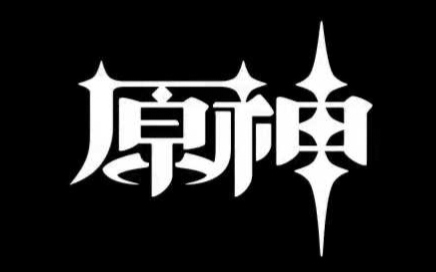
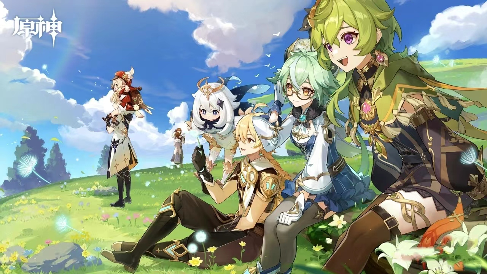

|  |  |
| 首页 官网 米游社 情节留影 风景展示 人气角色 原神五国 | |
| 游戏简介 | 《原神》是一款由中国游戏开发商米哈游开发的开放世界冒险游戏。以下是游戏的详细介绍： 背景设定。《原神》的故事发生在名为“提瓦特”的奇幻世界中，这个世界由七个元素主导，包括岩、雷、冰、风、水、火和草。 角色设定。玩家将扮演一位名为“旅行者”的角色，在游戏中探索这个世界，并与各种角色交流、完成任务、打怪升级。 游戏玩法。游戏设有丰富的BOSS和怪物供玩家挑战；玩家可以通过探索世界的隐藏地点和解谜来寻找宝藏和收集要素；玩家还可以收集各种资源和道具，通过打造、强化和升级来提升角色实力和装备属性。 特色系统。游戏中支持多种社交互动方式，如组队、留言板、好友互访等1。 |